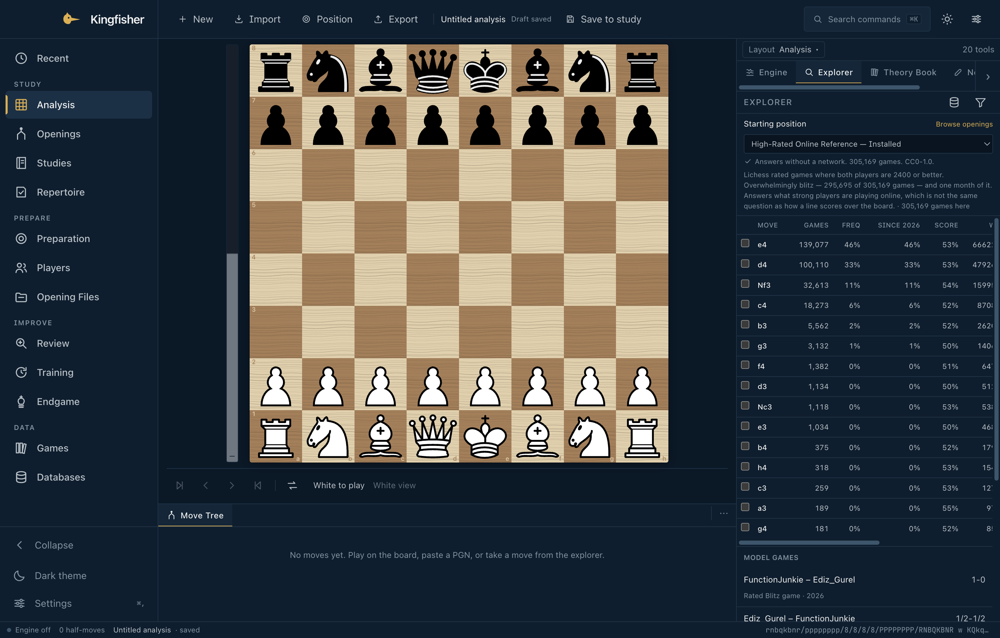

Public preview · 1.0.0-rc.4
Chess research,
in one place.
Kingfisher is a local-first chess workstation for serious
players. Opening research across separate evidence
sources, native engines, large personal databases,
repertoire and review — without an account and
without sending your work anywhere.
No account · no telemetry · no subscription · MIT-licensed source
Kingfisher · Analysis

172,376
games in the bundled Starter
407,538
Elite OTB broadcast games available
3,810
named opening positions with ECO codes
9
open-source engines, including Stockfish & Lc0